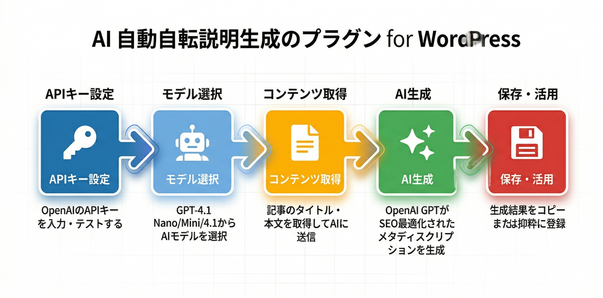

Kashiwazaki SEO Auto Description マニュアル

OpenAI GPTを活用して、投稿・固定ページ・カスタム投稿タイプ・メディアからSEO最適化されたメタディスクリプションを自動生成するWordPressプラグインです。
Kashiwazaki SEO Auto Descriptionは、SEOにおいて重要なメタディスクリプションの作成をAIで効率化するために開発されました。記事本文をOpenAI GPTモデルに送信し、内容に基づいた要約文を自動生成します。生成されたディスクリプションは投稿のメタデータとして保存され、投稿の抜粋フィールドへの一括コピーにも対応しています。一件ずつの個別生成と、数百件を一括処理するバルク生成の両方に対応しており、大規模サイトでもメタディスクリプションの整備を効率的に行えます。
AI自動生成
OpenAI GPTモデルでSEO最適化されたメタディスクリプションをワンクリック生成
一括処理
数百件の投稿を一括でAI処理。フィルター・ソート・プログレスバー付き
抜粋登録
生成したディスクリプションを投稿の抜粋フィールドに一括コピー
SEO / GEO における強み
メタディスクリプションはSEOの基本要素であり、検索結果でのクリック率に直接影響します。本プラグインはAIを活用してこの作業を効率化します。
メタディスクリプションの品質向上
OpenAI GPTモデルが記事本文を読み取り、内容に基づいた要約文を生成します。手動で作成する場合に起こりがちな「空欄のまま放置」や「定型文の使い回し」を防ぎ、各ページに固有のディスクリプションを効率的に用意できます。Googleは検索結果のスニペットにメタディスクリプションを使用することがあり、適切なディスクリプションがあるページはクリック率の向上が期待できます。
大規模サイトのメタデータ整備
数百件の投稿を一括でAI処理できるバルク生成機能により、既存コンテンツのメタディスクリプションを効率的に整備できます。投稿タイプ・生成状態でのフィルター機能を備えており、「ディスクリプション未設定の投稿」を一覧で確認して一括処理できます。メタディスクリプションが空のページを減らすことで、サイト全体のSEO基盤を底上げできます。
GEO（生成エンジン最適化）への寄与
AI検索（ChatGPT、Gemini、Perplexity等）がWebページを参照する際、メタディスクリプションはページの概要を素早く把握するための参考情報となります。各ページに記事内容を正確に反映したディスクリプションが設定されていることで、AIがそのページの主題を正しく理解し、関連する質問への回答ソースとして選択しやすくなる傾向があります。
抜粋フィールドとの連携
生成したディスクリプションをWordPressの抜粋（excerpt）フィールドに一括コピーする機能を備えています。多くのテーマやSEOプラグインは抜粋フィールドの値をメタディスクリプションとして出力するため、本プラグインで生成した内容を既存のSEOワークフローにそのまま組み込むことができます。
全体ワークフロー

目次
| ページ | 内容 |
|---|---|
| 概要 | プラグインの特徴・SEO/GEOの強み・動作要件を紹介 |
| インストール・初期設定 | プラグインの導入手順・APIキー設定・モデル選択 |
| 一括ディスクリプション生成 | 複数投稿のディスクリプションを一括で生成する方法 |
| トラブルシューティング | よくある問題と解決方法・動作要件・技術仕様 |
動作要件
| 項目 | 要件 |
|---|---|
| WordPress | 5.0以上 |
| PHP | 7.4以上 |
| OpenAI APIキー | 必須 |